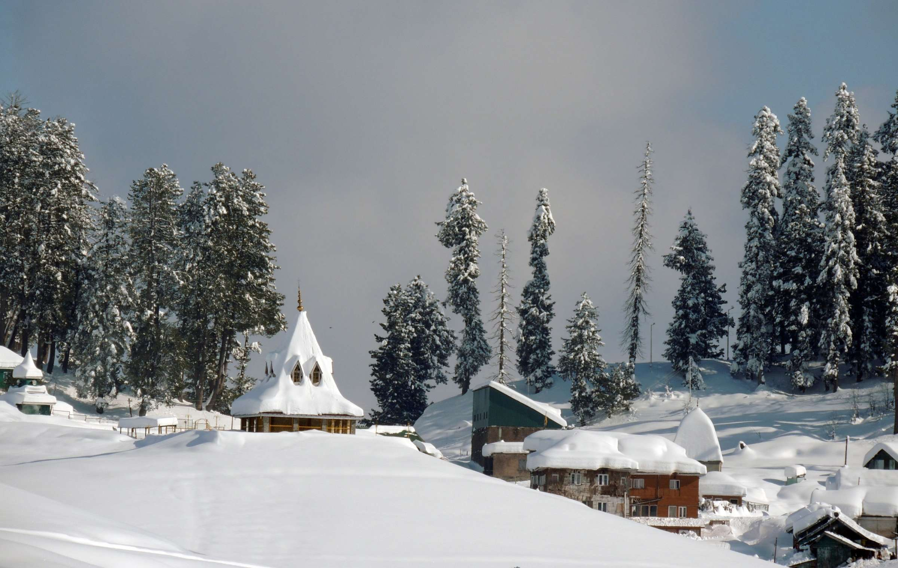
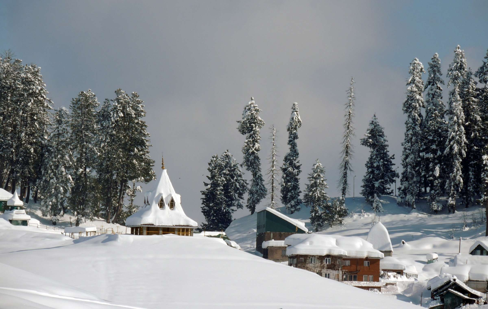

.jpg) 

Gulmarg is indeed a remarkable destination in Jammu and Kashmir, known for its rich history, natural beauty, and a wide range of activities. Here are some additional details and highlights about Gulmarg: Skiing and Winter Sports: Gulmarg is often referred to as the "Switzerland of India" due to its exceptional skiing opportunities. The Gulmarg Gondola, one of the highest cable cars in the world, takes visitors to the top of Mount Apharwat, where they can enjoy skiing, snowboarding, and other winter sports. The town has become a hub for winter sports enthusiasts, offering both beginner and advanced slopes. Gulmarg Gondola: The Gulmarg Gondola is a major attraction in itself, providing breathtaking views of the surrounding mountains and valleys. It's a must-do activity for visitors, offering a chance to see the landscape from a different perspective. Golfing: Gulmarg boasts one of the highest golf courses in the world, the Gulmarg Golf Course. Golfers can enjoy a unique experience surrounded by lush greenery and stunning mountain views. The golf course is open during the summer months. Nature Walks and Trekking: Gulmarg offers a range of trekking and nature walk options, catering to both amateurs and experienced trekkers. The Gulmarg Biosphere Reserve is a great place to explore the region's biodiversity. Viewpoints: The town is blessed with numerous viewpoints that offer panoramic vistas of the surrounding landscape. One of the most famous viewpoints is the "Sunset Viewpoint," where visitors can witness breathtaking sunsets over the mountains. Khilanmarg: Khilanmarg is a picturesque meadow carpeted with wildflowers during the summer months. It's a great place for a leisurely walk and offers stunning views of the peaks and lakes in the region. Alpather Lake: Alpather Lake, often frozen until mid-June, is a serene and pristine destination surrounded by snow-capped peaks. The trek to Alpather Lake is a rewarding experience for nature enthusiasts. Ningal Nallah: This stream, originating from the snow bed and springs near Affarwat and Alpather, flows through enchanting pine forests, providing a peaceful and picturesque setting for nature lovers. Ziarat of Baba Reshi: The Ziarat of Baba Reshi is a religious and historical site visited by both Muslims and Hindus. It's a place of reverence dedicated to Baba Payam-ud-Din, a noted Muslim Saint. Shopping: Visitors can shop for traditional Kashmiri handicrafts in Gulmarg, including Pashmina shawls, carpets, and local artifacts. The town has several markets where you can find these unique souvenirs. Local Cuisine: While in Gulmarg, don't miss the opportunity to savor authentic Kashmiri cuisine. Traditional dishes like Rogan Josh, Dum Aloo, and Kashmiri Pulao are popular choices. Gulmarg's diverse offerings, from winter sports to lush meadows and historical sites, make it a versatile destination that can be enjoyed throughout the year. Whether you're an adventure seeker, a nature enthusiast, or someone looking for a peaceful getaway, Gulmarg has something special to offer.